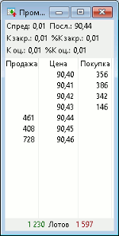

меню Создать окно / Котировки... или клавиша
«F4»
Отображение очередей заявок по одному инструменту. В системе QUIK возможно создание нескольких Таблиц котировок по одному и тому же инструменту для удобства группировки окон на разных экранных вкладках. Количество получаемой с сервера информации в этом случае не увеличивается.
Открытие Таблицы котировок осуществляется одним из следующих способов:
 Таблица содержит лучшие текущие котировки на покупку/продажу, упорядоченные
по параметру «Цена». Количество лучших котировок зависит от класса инструментов.
В заголовке таблицы указывается наименование инструмента, класс. Если таблица открывается по опционам, то дополнительно указывается тип опциона (PUT / CALL). Заголовок таблицы может быть изменён пользователем с помощью параметра «Имя таблицы» в окне редактирования настроек. В столбцах таблицы отображаются следующие параметры:
Суммарный объем на покупку и продажу в рыночных заявках, выставленных в период аукциона, отображается в верхней строке таблицы. При этом в поле «Цена» («Цена покупки» и «Цена продажи») отображается значение «MKT».
К таблице может быть применен Режим связанных окон. Отображение панели информации по инструменту включается флажком «Верхняя панель» в окне редактирования Таблицы котировок.
Панель располагается над таблицей. На данной информационной панели отображаются дополнительные параметры по инструменту. Список параметров и настройки отображения задаются в окне «Панель информации по инструменту».
Если ширины окна недостаточно для отображения всех параметров, то параметры выводятся по одному либо группами. Переход к следующему параметру (к следующей группе параметров) осуществляется нажатием левой кнопки мыши на панели информации.
Если ширины окна недостаточно для отображения хотя бы одного параметра, то значение параметра заменяется многоточием.
Для выбора доступны следующие параметры:
Назначение
Формат окна
Параметр
Значение
Цена покупки
Котировка на покупку, рублей
Цена продажи
Котировка на продажу, рублей
Цена
Котировка (в один столбец), рублей
Покупка
Количество инструментов в заявках на покупку
по данной цене с точностью количества инструмента или в
лотах
Продажа
Количество инструментов в заявках на продажу
по данной цене с точностью количества инструмента или в
лотах
Объем
Количество инструментов в заявках (в один
столбец) по данной цене с точностью количества инструмента или в
лотах
Своя покупка
Количество инструментов в собственных заявках
на покупку по данной цене с точностью количества инструмента
или в лотах
Своя продажа
Количество инструментов в собственных заявках
на продажу по данной цене с точностью количества инструмента
или в лотах
Свой объем
Количество инструментов в собственных заявках
(в один столбец) по данной цене с точностью количества инструмента
или в лотах
Доходность покупки
Доходность инструмента по котировке на покупку
Доходность продажи
Доходность инструмента по котировке на продажу
Доходность
Доходность инструмента по котировке (в один столбец)
Сумма лучшей покупки
Количество инструментов в заявках на покупку
по цене не хуже данной с точностью количества инструмента или
в лотах
Сумма лучшей продажи
Количество инструментов в заявках на продажу
по цене не хуже данной с точностью количества инструмента или
в лотах
Сумма лучших
Количество инструментов в заявках (в один столбец) по цене не
хуже данной, лотов
Сумма РЕПО
Суммарный объем котировок РЕПО по
данной ставке с точностью валюты
цены инструмента, рублей. Поле заполняется только для инструментов по классам
«МБ ФР РЕПО с ЦК 1 день Акции» и «МБ ФР РЕПО с ЦК 1
день Облигации» Панель информации по инструменту (верхняя)
Параметр
Краткое наименование
Значение *
Спред
Спред
Рассчитывается следующим образом:
«Лучшая цена предложения» – «Лучшая цена спроса»
Цена последней сделки
Посл.
Значение параметра «Цена последней сделки» таблицы «Текущие торги»
К закрытию пред.дня
К закр.
Значение параметра «Разница цены последней к закрытию предыдущей сессии» таблицы «Текущие торги»
К закрытию пред.дня, в %
%К закр.
Значение параметра «% изменения от закрытия» таблицы «Текущие торги»
К оценке пред.дня
К оц.
Рассчитывается следующим образом:
«Цена последней сделки» – «Предыдущая оценка»
К оценке пред.дня, в %
%К оц.
Рассчитывается следующим образом:
(«Цена последней сделки» - «Предыдущая оценка»)/»Предыдущая оценка»*100%
Средневзвешенная цена
Ср.взв.
Значение параметра «Средневзвешенная цена» таблицы «Текущие торги»
Расчетная цена
Расч.
Значение параметра «Расчетная цена» таблицы «Текущие торги»
Общее кол-во
Общ. к-во
Объем совершенных в текущей сессии сделок, в штуках
Цена закрытия
Закр.
Цена закрытия предыдущего дня
* - Если значение параметра отсутствует, выводится «н/д».
Отображение панели включается флажком «Нижняя панель» в окне редактирования Таблицы котировок.
Панель располагается под таблицей. Настройки отображения задаются в окне «Цвета нижней панели». По умолчанию значения параметров выделяются следующими цветами:
Для отображения доступны следующие параметры:
| Параметр | Краткое наименование | Значение покупки (слева) | Значение продажи (справа) |
|---|---|---|---|
| Суммарный спрос/предложение * | Лотов | Значение параметра «Общ. спрос» таблицы «Текущие торги» | Значение параметра «Общ. предложение» таблицы «Текущие торги» |
| Заявки на покупку/продажу | Заявок | Значение параметра «Заявки куп.» таблицы «Текущие торги» | Значение параметра «Заявки прод.» таблицы «Текущие торги» |
| Свои заявки/стоп-заявки | Своих | <Количество заявок клиента на покупку>/<Количество стоп-заявок клиента на покупку> | <Количество заявок клиента на продажу>/<Количество стоп-заявок клиента на продажу> |
* - Отображается по умолчанию.
Выбор отображаемых параметров осуществляется в контекстном меню нижней информационной панели. При нажатии на панели левой кнопки мыши осуществляется переход к следующему параметру.
Данные из таблицы доступны для вывода через DDE сервер и экспорта по ODBC.
Функции, доступные для данной таблицы, могут быть вызваны из пункта меню Действия или контекстного меню таблицы:
Дополнительно:
См. также: